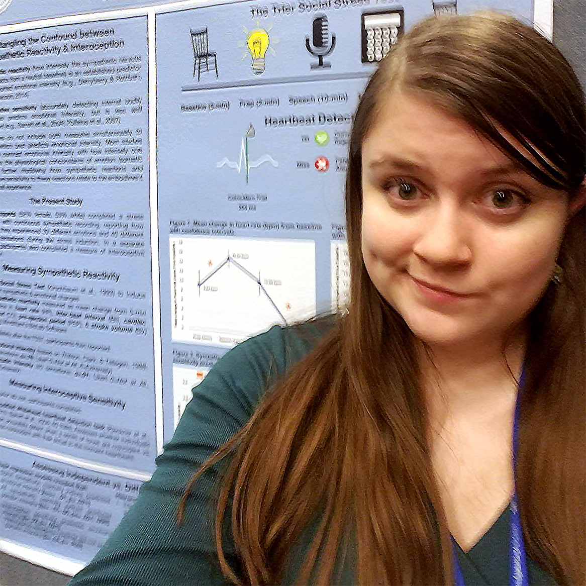

about
Jenna Perry is trained as a human behavioral data scientist with a strong background in both computer science and human subjects research techniques. At present she is a full-time contractor at the United States Postal Service, where she works with the Advanced Analytics team to optimize marketing data and produce predictive models using techniques from both traditional statistics and modern machine learning. She has previously worked as the primary data scientist for a large e-commerce company, conducting analysis and performing behavioral tests to improve search results and UX. She has also worked as freelance statistical consultant and as a statistical programmer preparing and visualizing pharmaceutical data in advance of FDA submission. She completed a scientific internship as a post-baccalaureate research associate / lab manager in Dr. Elizabeth Losin's Social and Cultural Neuroscience Lab at the University of Miami, an undergraduate research fellowship at Dr. Luke Chang's Computational Social Affective Neuroscience Lab at Dartmouth College, and an undergraduate honors thesis in Dr. Kristen Lindquist's Carolina Affective Science Lab at the University of North Carolina.
Armed with excellent research training and six years of full-time professional experience manipulating and analyzing data with a focus on human behavior, Jenna brings to the table proven skills in research design and data analytics. With formal training in computer science, deep practical experience in several programming languages, and the self-motivation to expand that foundation to include familiarity with the programming language best suited to the project at hand, she's willing to work as a team-player and help get the job done. Currently, she works primarily with R and SQL and at times Python to perform analyses, and creates visualizations and dashboards using tools like RShiny (with Javascript), R ggplot2, amd Tableau. In addition she's dabbled in several other languages, including Java, C, C#, and so on. Specific areas of laboratory-based research expertise include psychophysiology (measuring heart rate and skin conductance as proxy measures of nervous system activity), the study of stress and pain, and questionnaire development, administration, and scoring. She has strong scientific writing and communication skills and experience managing large datasets containing sensitive personal information. Another skillset is a working knowledge of Adobe Creative Suite products like Photoshop, Dreamweaver, and Premiere.
In terms of statistical and machine learning techniques, Jenna has a few favorites. She especially loves logistic regressions predicting human behavior, after applying dimensionality reduction techniques. She has a particular fondness for principal component analysis (PCA) and nested/hierarchical regression methods. Other advanced modeling methods she has used on the job include gradient boosting algorithms and time series analytics Of course, she also has experience with all the "usual suspects": general linear modeling, k-means clustering, inferential testing and group means comparisons, confidence interval preparation and explanation, etc. Jenna enjoys data science advocacy and puts a strong emphasis on ensuring all teams collaborating on a project are able to understand basic statistical principles so that they can best apply the results of the analysis to their own work areas. She is confident in preparing analytic results and presenting them to mixed teams, ranging from fellow data scientists and analysts to C-suite level business and marketing professionals.
When she's not troubleshooting code, working with human subjects, or running analyses, Jenna enjoys Star Wars, video gaming, and spending time with her two adorable cats and her infant daughter.
Looking for examples of Jenna's professional work? Sorry about that -- that part of this page is currently a work in progress. Much of her recent work is subject to NDAs, government security laws, and other policies that protect her clients' and employers' privacy and trade secrets -- and her past work isn't necessarily representative of her current skill set. If you're interested in seeing an example of some of her work, please feel free to reach out and she'll put together a redacted version of a relevant recent project. Under certain circumstances, Jenna is also happy to complete a brief custom project for prospective clients.

skillset
Here's a handful of things Jenna's good at:
- R, especially for data analysis, machine learning, dimensionality reduction, and reshaping, as well as some specialty packages (ggplot2, tidyverse, caret, emmeans, magick, scales, effects, etc.)
- statistical analyses at an advanced level: mixed effect modeling, hierarchical and linear regressions, ANOVAs, time series-based analyses, principal component analysis, logistic regressions, and so on
- result visualization for slide decks, scholarly articles, FDA submissions, informal presentations, and more
- machine learning approaches like Monte Carlo simulations, gradient boosting, k-means clustering, etc.
- data management, especially for large datasets that contain confidential personal identifying information and require stringent access rules
- study design for quantitative data streams, especially user-facing A/B testing
- psychophysiology collection, processing, and analysis
- human subjects administration including ethics considerations, data safety, forward-facing communication, etc.
- teaching, including undergraduate mentorship, intern management, and several years of tutoring and statistical consultations
- results communication, via presentations, truly readable summaries, visualizations, etc. suitable for viewers of all levels of familiarity with source material